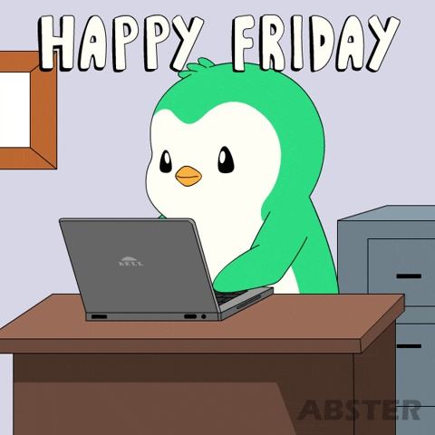

Volver al inicio
Clase 1
Unidad III - Introducción al HTML, primeros pasos – Formateo de textos

3.1 Organización, planificación y diseño de sitios web
Cuando se escribe un libro, un artículo o incluso un memorándum, por lo general no se empieza a escribir
directamente la primera frase y se sigue hasta el final; lo mismo ocurre con las artes visuales. Una mejor
manera de escribir, dibujar o diseñar una obra es planear de antemano: saber exactamente lo que se va a hacer,
lo que se quiere lograr y tener una idea general de la pieza antes de poner manos a la obra.
El proceso de escribir y diseñar páginas web requiere algo de planificación y reflexión, antes de empezar a poner
texto y gráficos y vincularlos sin ningún orden. Además, las páginas web mal organizadas son difíciles de
revisar y de ampliar. Algunas de las cosas en las que debes reflexionar antes de empezar a desarrollar páginas
web son:
- Qué es una presentación, un sitio, una página web y una página de inicio.
- Pensar en el tipo de información (contenido) que desea poner en la web.
- Establecer los objetivos de la presentación.
- Organizar el contenido en temas principales.
- Idear la estructura general de las páginas y los temas.
3.2 Anatomía de una presentación
Usted necesita saber lo que significan estos términos y cómo aplicarlos en un desarrollo web:
- La presentación web: Consiste en una o más páginas web, vinculadas en forma significativa y
que en conjunto describen un cuerpo de información.
- El sitio web: Cada presentación web se almacena en un sitio web, el cual es la máquina real
que está en la web y que contiene la presentación. Un solo sitio web puede contener muchas presentaciones
diferentes, cada una con su propio objetivo y desarrollada por diferentes personas. En conclusión, un sitio
web es un sistema de Internet que contiene una o más presentaciones web.
- Una página web: Es un archivo único, con su propio nombre, el cual es recuperado del
servidor y formateado por el navegador. Por tanto, una página web es un elemento único de una presentación
web y está contenida en un solo archivo en disco.
- La página de inicio: Por lo general contiene una síntesis del contenido de la presentación,
que está disponible a partir de ese punto (por ejemplo, en forma de una tabla de contenido o una serie de
íconos). En conclusión, una página de inicio es el punto de entrada o de partida hacia el resto de la
presentación web.
3.3 ¿Qué quieres hacer en la Web? - Contenido
Lo que quiere poner en la web es lo que se llama contenido. Contenido es un término que puede referirse
a texto, gráficos, medios, formularios interactivos, etc. Por tanto, el contenido son las cosas que usted pone
en la web: información, ficción, imágenes, arte, programas, humor, diagramas, juegos… todo esto es el contenido.
Algunas de las clases de contenido que son muy populares actualmente en la web son:
- Información personal: Para describir todo lo que cualquiera desea saber sobre usted y de lo
maravilloso que es; sus aficiones, su curriculum vitae, sus fotografías, las cosas que ha hecho, etc.
- Aficiones o intereses especiales: Puede contener información sobre un tema en particular,
una afición o algo de su interés, por ejemplo: la música, la serie de Viaje a las Estrellas, las
motocicletas, los hongos alucinógenos, los tinteros antiguos o los próximos conciertos de rock en su ciudad.
- Publicaciones: Se refiere a los periódicos, revistas y otro tipo de publicaciones que se
prestan para la web, que son más fáciles de actualizar que sus equivalentes impresos.
- Perfil de empresas: Se puede ofrecer información sobre lo que hace una empresa, su
ubicación, ofertas de empleo, informes oficiales y con quién ponerse en contacto.
- Documentación en línea: Se refiere a cualquier cosa, desde tarjetas de consulta rápida
hasta documentación completa, tutoriales y módulos de capacitación.
- Catálogos de compras: Para empresas que ofrecen productos a la venta, poner el catálogo en
la web es una forma rápida y fácil de llegar a los clientes con lo que tiene disponible y a qué precios.
- Tiendas en línea: Se pueden usar para vender productos a los consumidores. En estos sitios
se pueden crear "canastas de compras" donde los clientes ponen y quitan artículos. Al final, ellos
proporcionan el número de su tarjeta de crédito y la dirección donde se enviará el pedido.
- Encuestas y sondeos de opinión: La interactividad y los formularios web le permiten recibir
retroalimentación de sus lectores sobre cualquier tema; pueden ser sondeos de opinión, buzones de
sugerencias, comentarios sobre sus páginas web o productos, etc.
- Educación en línea: La interactividad de la web la hace un medio atractivo para distribuir
programas de educación a distancia. Actualmente, existen varias universidades, colegios y escuelas en línea.
- Cualquier otra cosa que se le ocurra: Ficción en hipertexto, juguetes en línea, archivos de
medios, arte en colaboración… ¡cualquier cosa!
3.4 Establecer los objetivos
Cuando vaya a escribir los objetivos, hágase estas preguntas: ¿Qué desea que realicen los lectores en su
presentación? ¿Están buscando información específica para hacer algo? ¿Van a leer cada página una por una,
avanzando sólo cuando hayan terminado con la página que estén leyendo? ¿Van a iniciar el recorrido en la página
de inicio para después vagar sin rumbo, explorando su "mundo" hasta que se aburran y se vayan a otro lado?
Por estos motivos, debe elaborar una lista de diversos objetivos que sus lectores puedan tener en sus páginas
web; mientras más claros sean los objetivos, mejor. Los objetivos no tienen por qué ser muy elevados (esta
presentación no tiene que producir "La paz mundial"), ni siquiera tienen que tener sentido para nadie más que
para usted. Empero, establecer los objetivos de los documentos web lo preparará para diseñar, organizar y
escribir las páginas web específicamente para alcanzar sus fines.
Divida el contenido en temas principales
Una vez definidos los objetivos, ahora trate de organizar el contenido en temas principales o secciones,
colocando información relacionada dentro de un mismo tema. Usted puede pensar en tantos temas como desee, pero
trate de que cada uno sea razonablemente corto. Si un solo tema parece demasiado grande, hay que dividirlo en
subtemas. Si tiene demasiados temas breves, trate de agruparlos dentro de un encabezado más general. El objetivo
es tener una serie de temas que, más o menos, sean del mismo tamaño y que agrupen secciones relacionadas con la
información que va a presentar.
3.5 Organización y Navegación
En esta etapa, usted ya tiene una idea clara acerca de lo que quiere hablar y una lista de temas. El siguiente
paso es empezar a estructurar la información que tiene en una serie de páginas web. Para ello, hay que
considerar algunas estructuras "estándares" que se usan en sistemas de ayuda y herramientas en línea. A
continuación, se describen algunas de esas estructuras, sus características y consideraciones como:
- Qué tipo de información funciona bien en cada estructura.
- Cómo se orientan los lectores dentro del contenido de cada tipo de estructura para encontrar lo que
necesitan.
- Cómo asegurarse de que los lectores puedan averiguar dónde están dentro de los documentos y que puedan
regresar a una posición conocida.
Estructuras de organización:
-
Jerarquías: La forma más sencilla y lógica de estructurar los documentos web es la
jerárquica o de menú. Las jerarquías y menús se prestan para los documentos en línea y de hipertexto. En una
organización jerárquica, los lectores pueden saber fácilmente su posición dentro de la estructura. La opción
es ascender para una información más general o descender para una información más detallada, usando las
opciones básicas de navegación (arriba, abajo, regresar al inicio); además, la estructura permite que el
riesgo de perderse sea mínimo. Sin embargo, hay que evitar incluir demasiados niveles y opciones, ya que eso
fastidiaría a los lectores. Trate de que la jerarquía se mantenga en dos o tres niveles de profundidad.
-
Lineal: Esta manera de organizar los documentos es muy parecida a como se organizan los
documentos impresos. En una estructura lineal, la página de inicio es el título o introducción, y cada
página sigue en secuencia a partir de ella; los vínculos avanzan de una a otra, por lo común hacia adelante
y atrás. Conviene incluir un vínculo hacia el "Inicio". Aunque limita al lector a explorar, es muy buena
para poner material en línea cuando la información real también tiene una estructura muy lineal (como
historias breves, instrucciones paso a paso, etc.), o bien cuando quiere evitar que los lectores salten por
todas partes.
-
Lineal con alternativas: La rigidez de la estructura lineal se puede aminorar permitiéndole
al lector que se desvíe de la ruta principal. En este tipo de estructura se ramificarán desde un solo punto;
las ramificaciones podrían reunirse con la rama principal en algún punto más abajo, o bien seguir su camino
por separado hasta llegar al "final".
-
Combinación de lineal y jerárquica: Una manera muy socorrida de organizar la documentación
en la web es una combinación de estructuras lineal y jerárquica. Este tipo de estructura se presenta con
mayor frecuencia cuando se ponen en línea documentos muy estructurados pero lineales; los famosos archivos
de preguntas más frecuentes (FAQ) utilizan esta estructura. La combinación de documentos lineales y
jerárquicos funciona bien, en tanto tenga las pistas adecuadas en cuanto al contexto. Debido a que los
lectores pueden subir y bajar, avanzar y retroceder, fácilmente pueden perder la ubicación que tienen en
mente. Se recomienda no poner vínculos "adelante" y "atrás" entre los límites de la jerarquía; proporcione
más contexto en el texto del vínculo: en lugar de solo poner "arriba", incluya una descripción del punto
hacia el que se dirige.
-
Red: Una red es una serie de documentos con muy poca o ninguna estructura general; lo único
que une a las páginas entre sí son los vínculos. El lector va a la deriva de un documento a otro, siguiendo
los vínculos por todas partes. Este tipo de estructura es excelente para contenidos intrincados, o no muy
relacionados, o cuando usted quiera fomentar la curiosidad del lector. La World Wide Web, por supuesto, es
una gigantesca estructura de red. En el contexto de una presentación web, el ambiente está organizado de tal
manera que cada página es una ubicación específica, y desde esa ubicación puede "moverse" en varias
direcciones, examinando el ambiente del mismo modo como iría de una sala a otra en un edificio de la vida
real. El problema con la organización en red es que uno puede perderse con demasiada facilidad. Para
solucionar este problema puede usar pistas en cada página; por ejemplo: señale el camino de salida con un
"Regresar a la página de inicio", o bien incluya un mapa de la estructura general en cada página con un
"Usted está aquí".